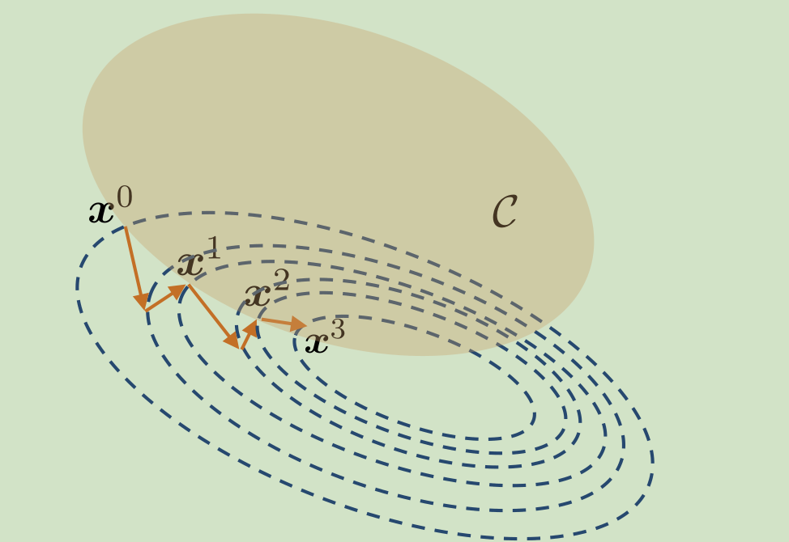

Query-effificient Black-box Adversarial Examples
先导知识
KL散度
通过一个分布$q(x)$去近似另一个分布$p(x)$，KL散度计算如下 $$ D_{KL}(p||q)=\int_{-\infty}^{+\infty}p(x)\log\frac{p(x)}{q(x)}dx $$ 可以用吉布斯不等式(Gibbs' inequality)证明KL散度>=0，KL散度越小，说明两个分布越接近，*q(x)*的拟合效果越好
投影梯度下降
一种解决带约束优化问题的方法，简单来说就是把梯度下降得到的点投影到满足约束条件的区域中。
正文
生成对抗样本的一般思想史，在满足约束（扰动半径小于某个epsilon）的情况下，找到对抗样本或者最大化损失。
经典的FGSM方法通过
找到向最陡的方向寻找对抗样本。
但这个方法需要知道模型的参数，或者说是梯度信息，即 $\theta$，然后在黑盒模型中，我们无法知道这个信息，只能通过输入和输出来进行估计。
梯度估计
白盒模型的对抗样本生成方法需要最大化目标函数（损失函数）$F(x)$，文本则采取NES（Natural Evolution Strategy），最大化在当前搜索的分布下，损失函数的期望。这里面的$\theta$可以理解为在x附近采样的一些点。在黑盒模型下，求x处梯度的方法的思想基本上都是用x的邻接点的信息得到梯度的逼近(比如最简单的差分)。
$$
\mathbb{E}{\pi(\theta|x)}[F(\theta)]=\int F(\theta)\pi(\theta|x)d\theta\
\nabla_x \mathbb{E}{\pi(\theta|x)}[F(\theta)]=\nabla_x\int F(\theta)\pi(\theta|x)d\theta\
=\int F(\theta)\nabla_x\pi(\theta|x)d\theta\
=\int F(\theta)\frac{\pi(\theta|x)}{\pi(\theta|x)}\nabla_x\pi(\theta|x)d\theta\
=\int \pi(\theta|x)F(\theta)\nabla_x \log(\pi(\theta|x))d\theta\
=\mathbb{E}_{\pi(\theta|x)}[F(\theta)\nabla_x \log(\pi(\theta|x))]
$$
文本进行搜索的分布采取了random Gaussian noise $$ \theta=x+\sigma \mathcal{N}(0,1) $$ 则 $$ \nabla \mathbb{E}[F(\theta)]\approx\frac{1}{\sigma n}\Sigma_{i=1}^n \epsilon_i F(\theta+\sigma \epsilon_i) $$
在对$\epsilon$采样时，文本并不是直接进行高斯采样($\epsilon_i \sim \mathcal{N}(0,1),i\in{1,2…n}$)，而是采用了antithetic sampling（对偶抽样法），即令
$$
\epsilon_j=-\epsilon_{n-j+1} \forall i \in {1…\frac{n}{2}} \forall j \in {(\frac{n}{2}+1)…n}
$$
这样可以让NES获得更好的效果，且如此一来，可以得到损失的期望以$\epsilon_i$为基的表达式
$$
\nabla\mathbb{E}[F(x)] \approx \frac{1}{n\sigma}\Sigma_{i=1}^{n}F(x+\sigma\epsilon_i)\epsilon_i\
=\frac{1}{n/2}\Sigma_{i=1}^{n/2}\frac{F(x+\sigma\epsilon_i)-F(x-\sigma\epsilon_i)}{2\sigma}\epsilon_i\
\approx\frac{1}{n/2}\Sigma_{i=1}^{n/2}D_{\epsilon_i}(x)\epsilon_i\
=\frac{1}{n/2}\Sigma_{i=1}^{n/2}(\nabla F \cdot \epsilon_i)\epsilon_i
$$
然后文章通过[2]和[3]来证明上文提到的梯度估计有比价好的可靠性
生成对抗样本
$$
\epsilon_t=\min \epsilon \text{ s.t. rank}(P(y_{adv}|\Pi_\epsilon(x_{t-1})))<k\
x_t=\arg \max_x P(y_{adv}|\Pi_{\epsilon_{t-1}}(x))
$$
其中，$\Pi_\epsilon(x)$代表$x$到以$x_i$为中心，无穷范数下$\epsilon$为半径的球的投影
Reference
[2] A. N. Gorban, I. Y. Tyukin, D. V. Prokhorov, and K. I. Sofeikov. Approximation with random bases. Inf. Sci.,364(C):129–145, Oct. 2016.
[3] S. Dasgupta, D. Hsu, and N. Verma. A concentration theorem for projections.
In Conference on Uncertainty in Artificial-Intelligence, 2006.